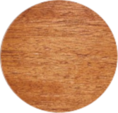

Mahagóni

A Swietenia nemzetségbe tartozó fafajok Közép- és Dél-Amerika trópusi alsó örökzöld esőerdeiben, félörökzöld erdeiben, a montán esőerdők alsó magassági fokozatában fordulnak elő. Leginkább Brazília, Honduras, Guatemala, Mexikó területén találhatók. Magasságuk 30 – 40 méter, a törzsük legtöbbször szabályos, hengeres, támaszgyökereket csak az idősebb fák fejlesztenek.
A szíjács fehéres, szürkés, 2,5 – 5 cm vastag, nem használják, a geszt színe sárgástól vörösesbarnáig terjed, utánsötétedik. A textúra a váltakozóan csavarodó növés miatt a megvilágítástól függően fénycsíkokat mutat, aranyszínűen fénylik. A pórusok szabad szemmel jól, a bélsugarak kevésbé láthatók./h2>
Szárítás: Jól, gyorsan szárítható, nem reped, nem vetemedik. Felhasználás közbeni stabilitása jó.
Megmunkálás: Kézi és gépi szerszámokkal egyaránt a legjobban megmunkálható faanyagok egyike. Jól fűrészelhető, késelhető, hámozható, faragható, de éles szerszámot igényel. Közepesen hajlítható.
Rögzítés: Jól szegelhető, csavarozható, jól ragasztható, a lúgos ragasztók foltot okozhatnak.< /h2>
Felületkezelés: Kiválóan csiszolható, lakkozható, kis pórustömítést igényel.
Tartósság: Gomba- és rovarálló, időjárásálló.
Elsősorban furnért készítenek belőle, ezen kívül igényes bútorok, stílbútor utánzatok fontos anyaga, de szerkezeti anyagként is alkalmazzák a külső és belsőépítészetben. A hajó- csónak- és járműépítésben, sportszerekhez, a hangszerészetben is használják, valamint esztergályozásra, faragásra, intarziakészítésre.